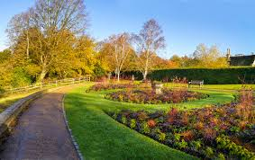

ScreenFreeSummers
ScreenFreeSummers
Mini Explorers: Nature Trails & Wildlife Hunts for Kids
Published July 2025
Make a screen‑free day adventurous with a nature trail or wildlife walk. London’s urban reserves offer ponds, woodlands, birds, insects—and lessons in conservation. All for free.
Where to Go
- Camley Street Natural Park (King’s Cross) – ponds, reed beds, mini-meadows and wildlife spotting stations. Ideal for a quiet afternoon.:contentReference[oaicite:5]{index=5}
- Greenwich Park – historical landscapes, woodland, and newly reintroduced deer herds on its wildlife trails.:contentReference[oaicite:6]{index=6}
How to Make It Interactive
- Create a printable scavenger checklist of birds, insects or leaves to find
- Bring a camera or sketchbook for drawing wildlife
- Identify trees or flowers and learn fun facts on the go
These nature hikes are free, educational, and a perfect alternative to screen time. Just bring water, snacks, and curiosity!